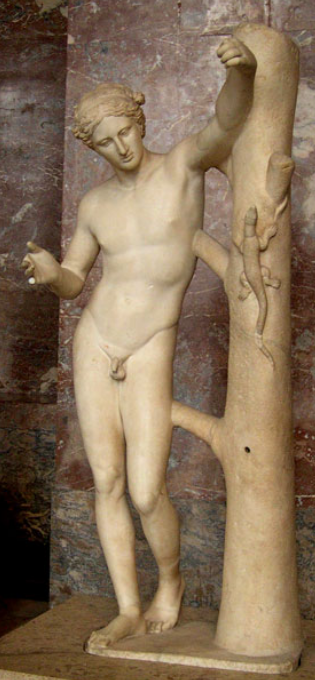
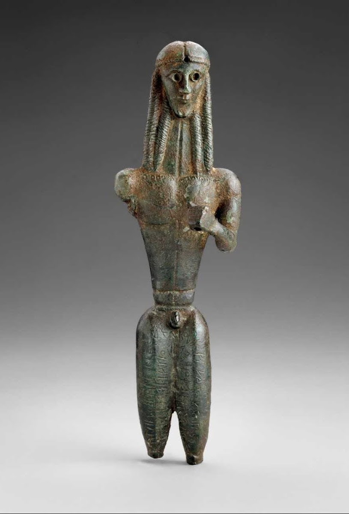
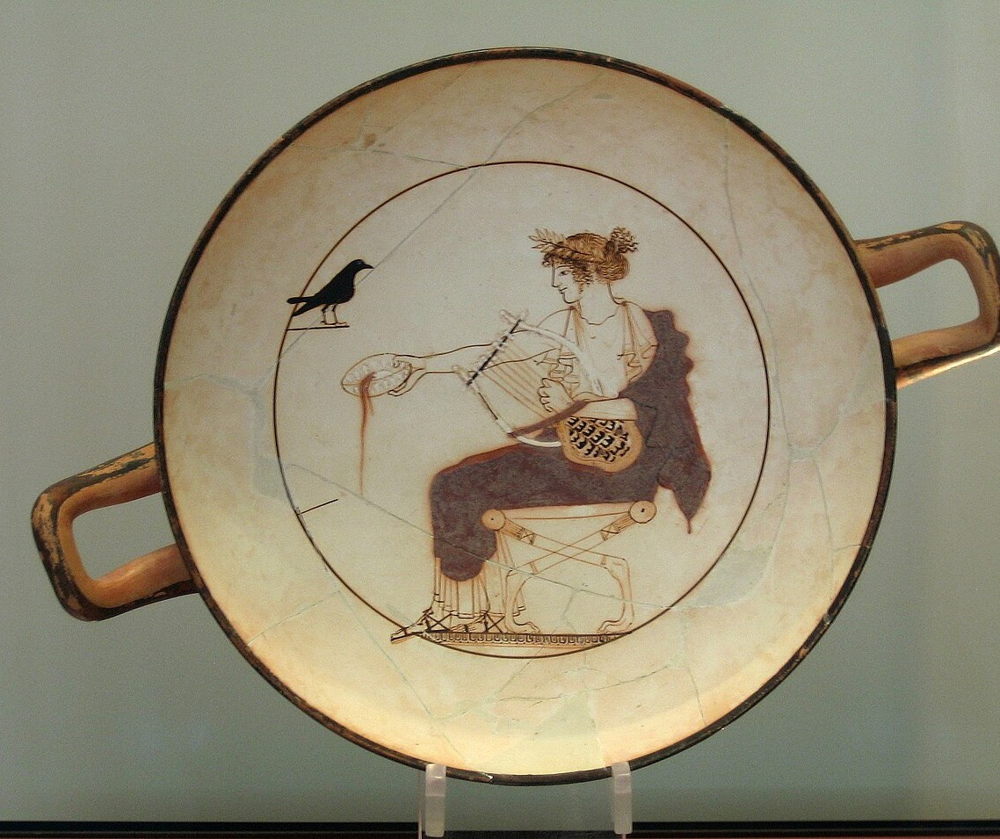
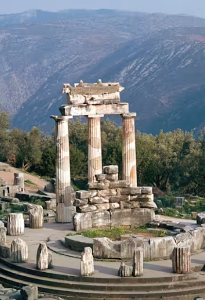
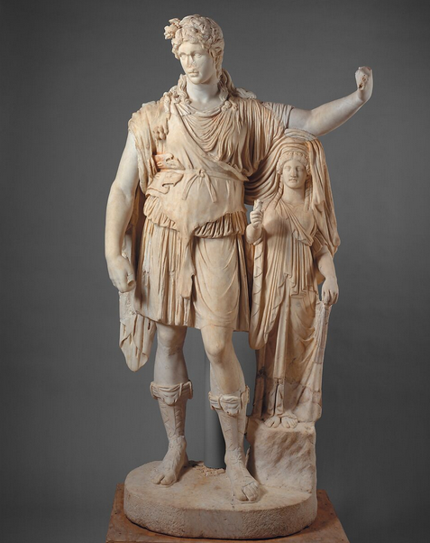
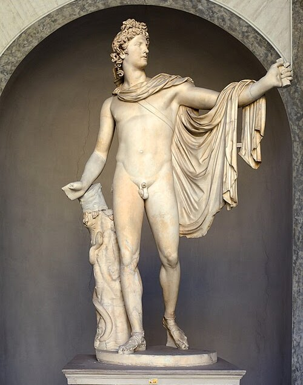
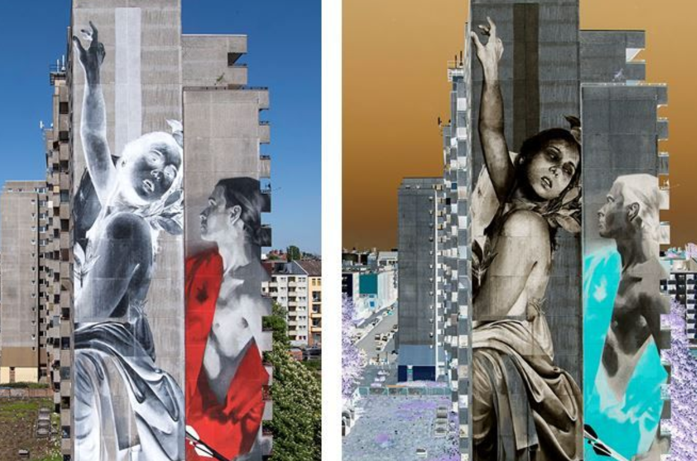

Campaign claim
Apollo wins because he makes life worth living.
Other gods may offer power, harvest, or desire. Apollo claims the arts, the light, and the discipline that turns inspiration into something lasting.
Client file 03
The world without Apollo is like a meal without salt.
Public position
Apollo brings light, entertainment, culture, music, art, prophecy, medicine, and sunlight itself. His file argues that life needs more than survival: it needs beauty, discipline, harmony, and creative achievement.
Campaign pitch
Other gods may offer power, harvest, or desire. Apollo claims the arts, the light, and the discipline that turns inspiration into something lasting.
Campaign claim
Other gods may offer power, harvest, or desire. Apollo claims the arts, the light, and the discipline that turns inspiration into something lasting.
Evidence exhibits
Each exhibit keeps the original client text with the artwork it describes, while the modern connection stands on its own at the end.
Exhibit 01
Divine Rebrand Agency Apollo Initial Pitch: The sun sets on every empire, but Apollo’s light endures. His influence is baked into every aspect of modern life - the world without Apollo is like a meal without salt. Public Position: The Greek pantheon may have many stars, but one still shines brighter than the rest. Other gods may rule with an iron fist, make the harvest bountiful, or offer love, but without Apollo, none of that matters. Apollo is what makes life interesting; he brings light, entertainment, and culture. Whether it’s music, art, prophecy, medicine, or sunlight itself, this god’s touch is everywhere. For 2,500 years, Apollo has been a patron of the arts, inspiring countless musicians, poets, and artists to create masterpieces. Without Apollo, the world lacks colour, it lacks light, it lacks music. It lacks everything that makes life worth living. Apollo is an eternal symbol of youthful splendour, representing the ideal kouros, the perfect image of vitality. Symbols: Laurel Weath “A symbol of victory that crowns Apollo’s head.” One of the symbols most strongly associated with Apollo is the laurel wreath. The link between Apollo and the laurel can be traced back to the story of Daphne, a nymph Apollo pursued while under Eros’ love spell, who fled and was changed into a laurel tree to escape him. In her honour, Apollo turned the laurel tree evergreen and wove a wreath from its leaves. Laurel wreaths have come to symbolize victory; they are often awarded to the winners of athletic competitions, and are frequently used in heraldry. Raven "Omens of ill fortune, punished by Apollo." Ravens are birds frequently associated with the prophetic nature of Apollo since they are seen as harbingers and ill omens, often representing impending death. According to legend, ravens were once pure white. A raven reported to Apollo that his mortal lover had been unfaithful, and Apollo was forced to have the woman killed. As punishment for ‘snitching’, Apollo smited the raven, turning it black. Kithara “An instrument gifted to the world by Apollo.” Apollo is frequently depicted playing the kithara, a complex type of lyre, which he is said to have created after mastering the lyre, an invention of his half-brother, Hermes. This creation was so great that it allowed Apollo to become patron of the Muses. The kithara is the predecessor of modern string instruments, including the guitar, which even gets its name from the kithara. Evidence File:

Exhibit 02
Apollo Sauroktonos (c. 350 BCE) For over 2,500 years, Apollo has represented the ideal of youthful vigour and beauty. He is known as the most beautiful of the male gods, falling short of only Aphrodite, goddess of beauty, herself. This Classical Greek sculpture, created by Praxiteles in 350 BCE, is known as Apollo Sauroktonos, or Apollo Lizard-Slayer. In it, Apollo is depicted as boyish, younger than what is typically depicted in sculpture, with a youthful body bordering on androgynous. Clearly, musculature and fitness are beside the point here; the sculptor wants us to focus on the action occurring, not the body. Apollo adopts a relaxed, almost graceful position, his body language open and approachable. His feet are slightly offset, his weight shifted. The statue uses a naturalistic S-curving contrapposto pose, introducing natural movement, but in contrast to other Classical Greek sculptures that utilize the contrapposto, here it is not self-sustaining. Apollo leans against a laurel tree, one of the symbols most commonly associated with him. Apollo’s hand is raised, clutching an arrow, preparing to strike a lizard perched on the tree. This specific scene is not found in myth; perhaps it is a variation on another story in which a young Apollo slays a python, or perhaps it is simply a product of the artist’s imaginings of what a boyish Apollo may have gotten up to.

Exhibit 03
Mantiklos Apollo (c. 700 BCE) Apollo’s influence can’t be easily severed; he is just as important today as he was thousands of years ago. Apollo is a god known to bring aid in times of trouble, and he has long been the god that people call on for aid. The Mantiklos Apollo represents one of the earliest known sculptures with a dedicatory inscription. The sculpture’s thigh is incised with a message devoting the object to Apollo and requesting a blessing in return. This is a very early example of Greek religious reciprocity, the act of presenting a gift or sacrifice to the gods in exchange for favour. The sculpture is also proposed to be one of the earliest surviving depictions of Apollo. Dating to 700 BCE, the Mantiklos Apollo is a freestanding kouros sculpture created in the Daedalic style. It is in an upright stance, posed rigidly towards the front, and depicted with the idealized body often seen in representations of Apollo. Typical of the Daedalic style, the kouros has roughly Geometric construction, with a triangular face and torso, but is certainly a step towards more anatomical accuracy. It features an elongated neck, cinched waist, and ribbed hair. The hand of the Mantiklos Apollo once held an object, but the item is no longer visible. It has been theorized to be a bow, as Apollo is known to be a master archer and god of archery.

Exhibit 04
Kylix of Apollo (c. 460 BCE) Apollo’s multidisciplinary nature is evident in the extreme variety of activities he is shown participating in. There is no one particular field he is tied to; Apollo is relevant across the board. Many aspects of Apollo’s domain are intertwined - music, prophecy, and art are all heavily tied to religion and ceremony. This is evident in the Kylix of Apollo, a white-ground red-figure kylix, or drinking vessel, created around 460 BCE. Red-figure pottery replaced the earlier style of black-figure pottery around 530 BCE, the technique shifting to add details using a small, fine brush rather than incising them directly into the clay. The kylix depicts a youthful, smiling, laurel-crowned Apollo sitting upon a stool, playing the lyre while pouring out a libation. Across from him is a raven. The kylix was discovered in a tomb at Delphi, and is believed to have been a funerary offering. The context of the discovery at Delphi, one of the holiest Greek sites in antiquity, hints at the item having religious significance. It is thought to have been used as a votive or dedication. The depiction of Apollo is located on the inside of the kylix, while the exterior remains plain; this has interesting implications, as the image can only be seen during use and is hidden from a distance. This makes interacting with the image a social experience, as one must be holding the object to see the depicted scene.

Exhibit 05
Temple of Apollo (Delphi, 330 BCE) Perhaps the most compelling evidence of Apollo’s enduring importance is the incredible Temple of Apollo at Delphi. The site is monumental, the architecture itself hinting at Apollo’s power. The temple is peripteral, with fluted columns arranged in six-by-fifteen peristyles. It is built in the Doric order, and is constructed primarily from limestone, with the exception of its marble columns. It fulfils the Greek architectural ideals of order, symmetry, and harmony. The site on which it stands was believed to be sacred; the temple was constructed five times over the course of more than 400 years, with the final, enduring version having been built in 330 BCE. The temple held great significance in its heyday. Visitors would travel to Delphi from great distances, most of them seeking the oracle. The Temple of Apollo hosted the priestesses of Apollo, known as the Pythia, who delivered prophecies through a process involving inhaling fumes to induce a delirium that would allow them to deliver the knowledge of Apollo. The Temple of Apollo was also a place of healing; people would travel to Delphi in times of widespread disease or plague, and would receive treatment. Apollo was a god with the ability to inflict or heal disease, and his temple reflected this through offering healing to the sick. In 390 AD, the Roman Emperor Theodosius I ordered the demolition of all pagan temples, and the brunt of the Temple of Apollo was destroyed. It still exists today, albeit in fragmentary form. Apollo’s temple may have fallen; Apollo himself has held strong, enduring into modernity.


Exhibit 06
Comparison: Dionysus and Apollo’s artistic differences. Apollo and Dionysus are both patrons of the arts. Dionysus is the god of theater and performance, while Apollo is the god of music, poetry, and the patron god of the Muses. One might expect this to put them on equal footing, but Apollo is still a step ahead. Dionysus' brand of creativity is characterized by sheer chaos. His followers experience altered mental states through consumption of wine and ceremonial imbibing, inviting revelry and emotional release. This is undoubtedly important; this can lead to the inspiring spark the thing that makes us think and feel. Inspiration alone, though, isn't enough to make a masterpiece. Apollo's brand of creativity is characterized by skill and mastery. His artistic domains center on balance, harmony, proportion, and controlled beauty. Dionysus might inspire people to create, but without Apollo, their art would be nowhere near as beautiful. Without discipline, inspiration has no form. Dionysus: Artistic Chaos The Hope Dionysus statue, created in the first century AD, depicts a youthful, theatrical Dionysus in a relaxed posture. His body is soft and at ease, his clothing draped to create movement and structure. His pose is human and approachable, inviting the viewer into his world. His clothing and shoes hint at his wild nature; he is draped in a panther skin, and his boots are adorned with animal heads. These features point at his association with ecstasy and wildness. Apollo: Artistic Harmony The Apollo Belvedere statue, a Roman second century AD copy of a Greek original, presents Apollo as the perfect human form, his anatomy idealized to the Greek standard, reflecting the values of proportion and harmony. His contrapposto stance balances movement with stability, his expression calm and controlled. His physical perfection is emphasized through his nudity, his cape carefully draped over an arm to reveal his body. Dionysus gives humanity temporary moments of escape and inspiration, but these experiences don't last. While Dionysus inspires through emotion and transformation, Apollo represents the discipline that turns inspiration into something lasting. The Hope Dionysus shows the pleasure of the moment; the Apollo Belvedere shows the ideal that survives through history.
Final verdict
Modern connection

Modern connection
Modern Example: Even today, artists still can't get enough of Apollo. He appears frequently in media, from musicals to book series to artistic exhibitions. Apollo's influence is eternal; as long as people create art, Apollo's legacy lives on. "One Wall": Daphne and Apollo The "One Wall" project, by artists Francisco Bosoletti and Young Jarus, transforms the facades of public buildings around Berlin. One of these murals is inspired by the legend of Daphne and Apollo, the unrequited romantic pursuit that culminated in Daphne's transformation into a laurel tree. Here, the artists have put a twist on the myth, diverging from previous artistic depictions of the pursuit by portraying Daphne in negative colouring and Apollo in positive colouring. This is meant to encourage viewers to use their phones to invert the colours, transforming Daphne into positive colouring and Apollo into negative colouring. By portraying the two in different colour schemes, the artists are essentially demonstrating how the chase is pointless; they can never be together. If Daphne is in positive, Apollo is in negative, and vice versa. The interactive, uniquely creative style of this artwork proves just how much Apollo continues to inspire artists to this day. As long as humanity continues to create art, Apollo's legacy endures; not as a forgotten god of antiquity, but as the eternal symbol of creativity, harmony and artistic achievement. His power survives not in temples, but in every song written, every piece of art created, and every pursuit of beauty. Apollo is not the god that allows us to live, but the god that makes life worth living.
Evidence archive
Sources:
Symbols
Kalaycı B, Özbek H. "The Laurel Tree: From Mythical Symbolism to Medicinal Wisdom in Ancient and Folk Traditions." Karakaya S, Sytar O, eds. Medicinal Plants in Turkish Cultural Heritage. 1st ed. Ankara: Türkiye Clinics; 2026. p.181-7. https://books.turkiyeklinikleri.com/chapter/the-laurel-tree-from-mythical-symbolism-to-medicinal-wisdom-in-ancient-and-folk-traditions/
Newlands, Carole E. “Ovid’s Ravenous Raven.” The Classical Journal, vol. 86, no. 3, 1991, pp. 244–55. JSTOR, http://www.jstor.org/stable/3297429.
Rutherford, Ian. "Apollo and music." A companion to Ancient Greek and Roman music (2020): 25-36. https://onlinelibrary.wiley.com/doi/abs/10.1002/9781119275510.ch2.
Evidence File
Gaifman, Milette. “Timelessness, Fluidity, and Apollo’s Libation.” Res Anthropology and Aesthetics, vol. 63–64, pp. 39–52. https://doi.org/10.1086/690976.
Middleton, J. Henry. “The Temple of Apollo at Delphi.” The Journal of Hellenic Studies, vol. 9, 1888, pp. 282–322. JSTOR, https://doi.org/10.2307/623677.
Mitten, David Gordon. “The Earliest Greek Sculptures in the Museum.” Boston Museum Bulletin, vol. 65, no. 339, 1967, pp. 4–18. JSTOR, http://www.jstor.org/stable/4171466.
Olszewski, Edward J. “PRAXITELES’ ‘APOLLO’ AND PLINY’S ‘LIZARD SLAYER.’” Source Notes in the History of Art, vol. 31, no. 2, Jan. 2012, pp. 2–9. https://doi.org/10.1086/sou.31.2.23208929.
Comparison
Horman, Jane. “The Hope Dionysos (After Augustus): A Post-Actian Reading of Dionysian Imagery.” CUNY Academic Works, academicworks.cuny.edu/gc_etds/6650.
Suarez De La Torre, Emilio. “Redefining Dionysos.” Google Books, 2013, books.google.ca/books?hl=en&lr=&id=FmTnBQAAQBAJ&oi=fnd&pg=PA58&dq=greek+apollo+&ots=tO8hdhaImn&sig=UunZG-KltnbRM4WpLW2UTG4-GoU#v=onepage&q=greek%20apollo&f=false.
Modern Example
Fellechner, Stefan. “One Work of Art – Two Perspectives: Daphne and Apollo on a 45-meter Tall ‘One Wall’ in Berlin-Kreuzberg – Urban Nation.” Urban Nation, 2 Mar. 2021, urban-nation.com/2018/05/one-work-of-art-two-perspectives-daphne-and-apollo-on-a-45-meter-tall-one-wall-in-berlin-kreuzberg.
Images
Andronico, Livio. "Apollo del Belvedere". 01 Sep 2015, Wikimedia Commons, https://commons.wikimedia.org/wiki/File:Apollo_del_Belvedere.jpg.
Boseletti, Francesco. " One Wall". 11 May 2018, Urban Nation Museum for Urban Contemporary Art, https://urban-nation.com/2018/05/one-work-of-art-two-perspectives-daphne-and-apollo-on-a-45-meter-tall-one-wall-in-berlin-kreuzberg/.
Bulic, Mina. "Apollo Citharoedus." World History Encyclopedia, 04 Feb 2015, https://www.worldhistory.org/image/3601/apollo-citharoedus/.
Dixon, CM. "Temple of Apollo, Delphi". History, 09 May 2018, https://www.history.com/articles/delphi.
Museum of Fine Arts, Boston. "Mantiklos "Apollo"". Google Arts and Culture, nd., https://artsandculture.google.com/asset/mantiklos-apollo-unknown/WAHuj5sK2Q_D8g?hl=en.
Nguyen, Marie-Lan. "Apollo Sauroktonos". Wikimedia Commons, 10 Jul 2011, https://commons.wikimedia.org/wiki/File:Apollo_Sauroktonos_Louvre_Ma441_n06.jpg.
Pacetti, Vincenzo. "Statue of Dionysos leaning on a female figure ("Hope Dionysos")". Wikimedia Commons, 09 April 2017, https://commons.wikimedia.org/wiki/File:Statue_of_Dionysos_leaning_on_a_female_figure_(%22Hope_Dionysos%22)_MET_DT6495.jpg.
Tomisti. "Cylix of Apollo". Wikimedia Commons, 2011, https://commons.wikimedia.org/wiki/File:Apollo_black_bird_AM_Delphi_8140_-_large.jpg.
By Jillian Beamer